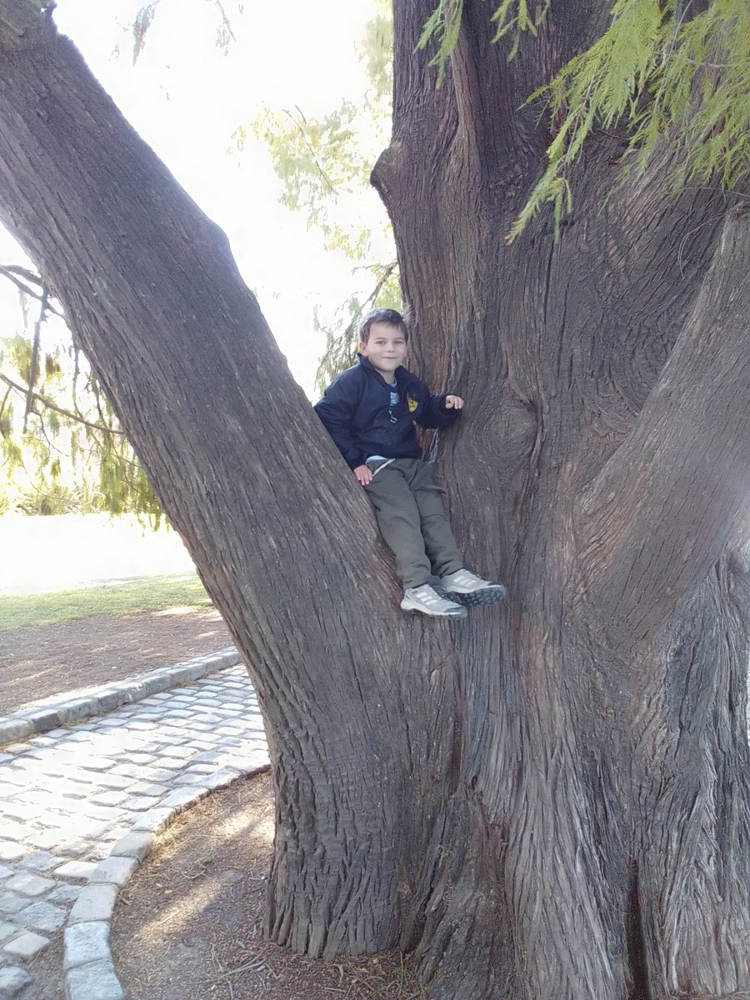

Why Paraguay Needs More Lifelong Disability Support Options
More dependable choices for adults and the people who support them.

I love this photo of Sam in Buenos Aires, just being a little boy hanging out in a tree. Like so many families, we enjoy traveling together.
Our vision for Casa de Sam includes a fulfilling home for residents, as well as respite, overnight, and vacation care. We hope to give traveling families a home base in Paraguay where they can enjoy the country with support that takes their family member’s special needs into account.
Lifelong disability support should give people dependable ways to live, communicate, participate, and receive help as their circumstances change. Paraguay needs a conversation about that full range of support, not only about childhood treatment or where someone might sleep if family care becomes unavailable.
More options should mean more genuine choice: assistance at home, support for everyday activities, reliable respite where available, accessible healthcare, and suitable housing connected to community life. The exact combination will be different for each adult. This is a direction for better planning, not a claim that every option listed here currently exists in every part of Paraguay.
The question is not whether families care enough. It is whether the support around a person can continue when work, health, age, relationships, or location changes.
A service is useful only if people can actually use it
A program can exist on paper while remaining difficult for a particular family to use. Opening hours, transport, cost, eligibility, communication, and the level of assistance offered all affect whether it is a real option.
Consider a hypothetical adult offered an activity three mornings a week. If no one can provide transport or support the adult while there, the offer does not yet solve the participation gap. If a family member must attend every session, it may offer a valuable shared activity without providing caregiver respite. Both possibilities deserve an honest description.
When discussing expansion, ask what problem the service actually solves and what work it still leaves with the adult or family. Counting places or appointments alone cannot answer that question.
Rights and practical support belong together
The UN disability-rights Committee’s 2023 review of Paraguay identified concerns about community living, including support and housing information. It urged alternatives that respect people’s wishes and preferences. The report is a dated baseline, not proof that every condition is unchanged today. Read paragraphs 35–36.
The Committee calls for deinstitutionalization and community inclusion; its recommendations should not be read as an endorsement of residential developments.
The practical lesson is to evaluate both resources and rights. Does someone have dependable help? Can they influence how that help is provided? Can they remain connected to people and places outside the service? Is there a way to raise concerns safely?
A residential setting does not become inclusive simply because it is called a home or community. A home-based arrangement is not automatically sustainable simply because care happens within a family. Both need scrutiny, and adults with disabilities must be involved in shaping the answers.
Legal reform also needs careful interpretation. Paraguay’s Law 7371/2025 addresses rights and legal support. Its existence does not, by itself, establish that an individual has a funded residential placement. Families should seek qualified local advice about their own circumstances.
Build several kinds of support, not one universal model
A stronger range of options would let people address different needs without treating every difficulty as a reason to move away from home.
Help with everyday life. Some adults need assistance with personal care, communication, shopping, meals, appointments, or organizing a day. Planning should specify the help and the hours rather than relying on a broad label.
Meaningful activity and relationships. Learning, recreation, work when wanted, and friendship should be considered alongside care tasks. The person needs a way to participate, not merely a place to be supervised.
A break that actually works. Where respite is available, it should be suitable for the adult as well as useful for the caregiver. Ask about preparation, familiarity, communication, and what the arrangement can safely provide. Do not assume a day program or clinical appointment serves the same purpose.
Housing with accountable support. Some adults want or need a different living arrangement. That requires attention to staffing, privacy, choice, affordability, continuity, and connections beyond the household.
Help navigating decisions. Families may need accessible explanations and qualified legal or financial advice. No one should have to guess whether a form gives authority, a program covers a service, or a promise will survive a change in leadership.
These are complementary functions. A housing provider does not replace a health service, and a caring neighbor does not replace trained support where it is needed.
Make continuity a concrete question
“Lifelong” is a serious word. It should prompt questions about what happens when a worker leaves, a caregiver becomes ill, costs rise, or an adult’s needs change. It should not be used as an unconditional promise that a project cannot demonstrate it can keep.
Ask who owns each part of the plan. Who updates the information? Who notices when support is no longer working? Who can authorize a change where authorization is required? Who helps the adult understand their options?
Our article on what lifelong support actually means explores this distinction. A useful plan is maintained over time. It is not a folder completed once and left untouched.
Questions for anyone proposing a new service
Before welcoming a new program as the answer, ask:
- Which adults helped shape it, and how were people with substantial communication or support needs included?
- What can it provide now, rather than after a future fundraising or construction milestone?
- Who is excluded by age, location, cost, or support needs, and what happens to those people?
- What training, supervision, and backup make the staffing plan credible?
- How can an adult make a complaint or ask for a different supporter?
- What information is collected, who sees it, and how is privacy protected?
- How does the service maintain ordinary relationships and access to the wider community?
- What evidence would show it is helping, and what would make the organizers change course?
Good intentions are a beginning. Clear answers, realistic resources, and accountability are what make an option worth relying on.
What families and supporters can do this week
Choose one gap in an ordinary week and describe it precisely. For example: the person wants to attend an activity but has no confirmed transport and assistance. Avoid starting with a solution before the need is clear.
Ask one relevant service or public office what it can currently provide and where it would refer someone whose needs fall outside its scope. Confirm the age range, location, support level, and next step. Keep a short record so another family member does not have to begin the same search again.
If discussing unmet needs with a community group, share only what the person and family are comfortable making public. A useful conversation does not require exposing a child’s or adult’s private care history.
Casa de SAM is one developing vision
Casa de SAM is in the planning and organizational stage. Its long-term goal is a residential community in Paraguay, with an opening goal of 2035, for adults with developmental disabilities who need ongoing support. It is not an operating service, and no current placement or funding is promised here.
That vision should contribute to a wider range of good choices, not replace them. Families who never contact Casa de SAM still deserve understandable information, dependable support, and a future that includes their loved one’s voice.
This article offers general planning questions, not a current service directory or legal, medical, or financial advice. Verify local options and requirements directly. Sources reviewed November 6, 2026.